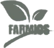
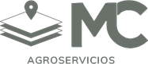

La plataforma integral para el agro
Menos tiempo buscando datos. Más tiempo tomando decisiones.
FarmIA reúne la información técnica, productiva, operativa y económica en un solo lugar, y usa IA para escalar el análisis de toda tu empresa agropecuaria.
Productor, asesor y dirección trabajando sobre la misma información.
Campo y GIS
Gestión
Resultados
Escala y confianza de FarmIA
Un flujo, de punta a punta
De una señal en el lote a una decisión con contexto.
La información continúa dentro de FarmIA: el equipo observa, valida, actúa y aprende sin reconstruir la historia entre mapas, mensajes y planillas.
01Observar
Encontrar una señal
Imágenes satelitales permiten contrastar vigor y humedad sobre el mismo lote.
Ver imágenes satelitales02Validar
Validar en campo
El equipo registra una nota georreferenciada con ubicación, foto o voz.
Ver monitoreo03Actuar
Planificar la intervención
El diagnóstico se convierte en una prescripción ajustable y lista para llevar al equipo.
Ver prescripciones04Aprender
Revisar el resultado
FarmIA permite comparar lo esperado con el resultado real y conservar el aprendizaje para la próxima campaña.
Ver análisis y resultados
Todo en un solo lugar
Ocho módulos. Un mismo contexto.
Cada módulo resuelve una parte concreta del trabajo, pero los módulos técnicos continúan sobre el mismo contexto del lote. Elegí uno para conocerlo en detalle.
Entender→Planificar→Actuar→Aprender→Gestionar
01
Análisis GIS y resultados
Mapas, ambientes y resultados comparables.
Conocer el módulo → 02Imágenes satelitales y altimetría
NDVI, humedad, relieve y evolución del lote.
Conocer el módulo → 03Agroclima
Pronóstico, lluvias e historia por campo.
Conocer el módulo → 04Prescripciones y ambientación
Del diagnóstico a una receta variable.
Conocer el módulo → 05Monitoreo y app móvil
Observaciones georreferenciadas desde el lote.
Conocer el módulo → 06Balance de suelo
Extracción, reposición y nutrientes por campaña.
Conocer el módulo → 07Muestreo de suelo
Puntos, eventos y resultados dentro del lote.
Conocer el módulo → 08Gestión
Planificación, documentos y resultados económicos.
Conocer el módulo →
Asistencia con IA, decisión agronómica
FarmIA te ayuda a encontrar qué revisar. El criterio sigue siendo humano.
FarmIA cruza capas, resume evidencia y sugiere dónde profundizar. El agrónomo revisa el contexto, valida a campo y decide qué hacer.
Datos y capas→Hallazgos sugeridos→Revisión y decisión del equipo
El agrónomo decide
Un equipo, una misma realidad
Cada rol gana foco sin perder el contexto.
FarmIA conecta la visión empresarial con el criterio agronómico y lo que ocurre en el campo.
Visión consolidada
Entendé la empresa completa, compará resultados y detectá dónde hace falta profundizar.
Control de la operación
Accedé al contexto de cada lote, campaña y decisión sin reconstruir la historia manualmente.
Análisis que escala
Analizá más lotes y campañas con trazabilidad, y dedicá el tiempo al criterio técnico.
Confían en FarmIA
Empresas que ya trabajan con FarmIA
Equipos agropecuarios que centralizan información y toman decisiones con más contexto.


Puesta en marcha
Empezar es simple.
Partimos de cómo trabaja hoy tu empresa y avanzamos sobre lo que más valor puede aportar primero.
Agendar una demo- 01Conocemos tu operación
Una reunión de 30 minutos para entender equipos, información y decisiones prioritarias.
- 02Priorizamos módulos e información
Definimos un punto de partida concreto según las necesidades de tu empresa.
- 03Acompañamos la puesta en marcha
Organizamos el inicio y ayudamos al equipo a incorporar FarmIA a su trabajo.
Conocé FarmIA en acción
Elegir día y horario
Elegí un día y horario.
Reservá una demostración personalizada directamente en el calendario de nuestro equipo. Recorremos FarmIA con foco en tu empresa, tus equipos y las decisiones que hoy consumen más tiempo.
Reuniones de 30 minutos por Google MeetLunes a viernes, de 8 a 17 h · Horario de Buenos Aires
- Demo enfocada en tu empresa
- Recorrido web y móvil
- Invitación y enlace de Meet automáticos
Preguntas frecuentes
Lo importante antes de empezar
Si tu duda no está acá, escribinos por WhatsApp y la conversamos.
¿Qué información puedo centralizar en FarmIA?
Información técnica, productiva, operativa y económica: lotes, campañas, mapas, imágenes satelitales, monitoreos, prescripciones, documentos, costos y resultados.
¿Para quién está pensada la plataforma?
Para dirección, productores y asesores que necesitan trabajar sobre una misma realidad sin reconstruir la información entre archivos, mensajes y planillas.
¿FarmIA reemplaza el criterio del agrónomo?
No. FarmIA ordena información, conecta evidencia y acerca sugerencias. El profesional revisa el contexto, valida y toma la decisión.
¿FarmIA funciona desde el celular y en el campo?
Sí. La plataforma combina web y app móvil para consultar lotes e imágenes y registrar observaciones georreferenciadas durante el trabajo de campo.
¿Cómo es la implementación?
Primero entendemos tu operación y los módulos prioritarios. Después organizamos la información inicial y acompañamos al equipo en la puesta en marcha.
¿Puedo conocer FarmIA antes de decidir?
Sí. Agendamos una demo personalizada con foco en tu empresa y en las decisiones que hoy le consumen más tiempo al equipo.